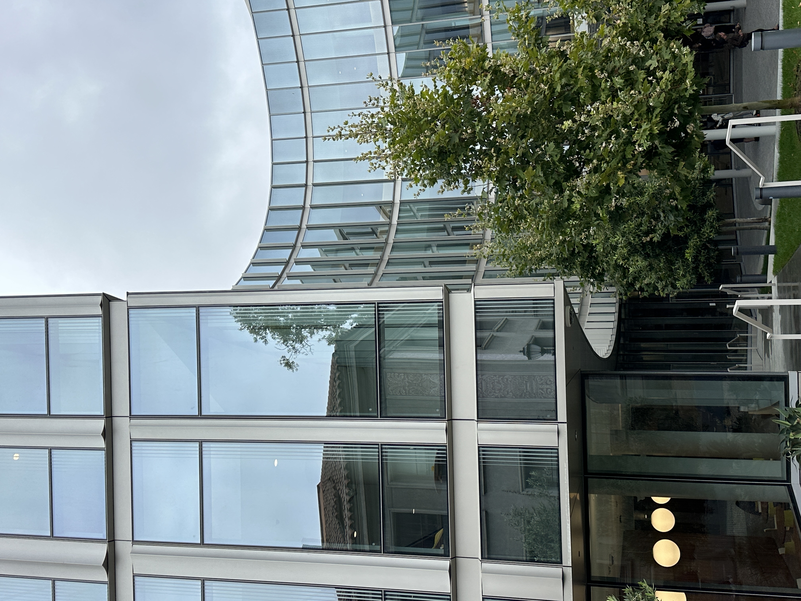
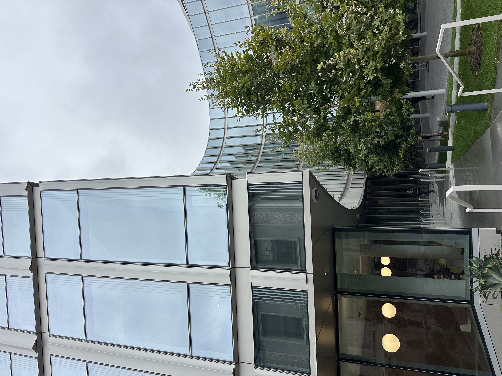

The second picture looks better because the face looks more natural and proportional. In the close-up shot, the camera is very close to the face, so the nose which is prominent part of and the center of the face appear larger while the sides of the face seem farther away. After I stepped back and zoomed in, these differences became less noticeable and her facial features looked more balanced. The longer focal length helped me keep her face at a similar size in the frame while shooting from farther away.
02
Part 2

With zoom

Without zoom
Similar to the previous part, the first picture looks better because taking the photo from farther away reduces perspective distortion. When I walked closer to the building, its position relative to me also changed. Instead of being in front of me, part of the building was diagonally above me/my camera. This change in viewpoint makes the depth and shape of the building look more exaggerated. In comparison, zooming in from farther away keeps the building at a similar size in the frame while making the overall perspective look flatter and more natural.
03
Part 3
In this part, I recreated the dolly zoom effect by changing both the camera distance and the focal length. As I moved closer to the subject, I zoomed out to keep the subject at roughly the same size in the frame. Although the subject stays relatively stable, the background changes dramatically because of the changing perspective. I can see why this effect is often used in films to create a sense of tension or draw the viewer’s attention strongly toward the subject.